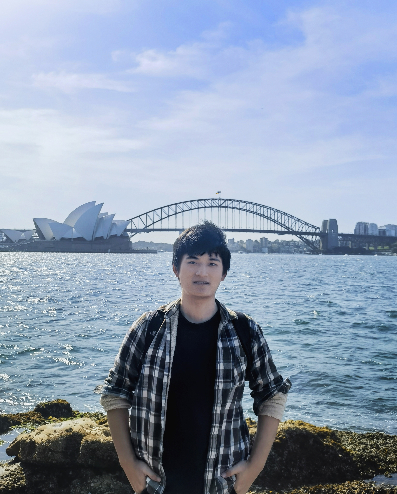
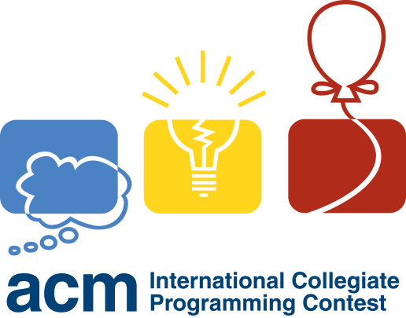

|
Ziniu(Michael) Zhang Hi there!🤗 I am a senior student majoring in Computer Science (Honor College) at University of Electronic Science and Technology of China(UESTC). My interests span across computer vision and deep learning. Previously, I was privileged to intern in Data Intelligence Group advised by Prof. Wen Li. I really appreciate my journey as a visiting student in the University of Queensland advised by Prof. Yadan Luo specialized in test-time domain adaptation in 3D detection. Additionally, I spent two unforgettable years in the UESTC ACM-ICPC team. Currently, I am a research intern in MMLAB@NTU fortunately advised by Prof. Ziwei Liu working on multimodal agents. |
 |
{kind=link}
ResearchI have a broad interest in computer vision tasks both in 2D pixel and 3D point cloud. Now my research is focused on using vision large language models to reason and make decisions. I am passionate about using AI technology to make our lives more and more convenient. |

|
MMInA: Benchmarking Multihop Multimodal Internet Agents
Ziniu Zhang*, Shulin Tian*, Liangyu Chen*, Ziwei Liu (* equal contributions) Preprint 2024 Project / Paper |
Awards |
|  |
- Silver medal in the 47th ACM-ICPC International Collegiate Programming Contest Asian Reginal (Rank: 48/511)
- Silver medal in the 8th China Collegiate Programming Contest(CCPC). - Bronze medal in the 7th China Collegiate Programming Contest(CCPC). - First Prize in the 23rd National Olympic in Informatics in Provinces(NOIP)(Senior group). |
Service- Volunteer in the 10th China Collegiate Programming Contest(CCPC) Final.- Director of 2022 UESTC ACM-ICPC Training Project in Dynamic Programming. - Co-organizer of the selection of 2022 UESTC ACM-ICPC university team. - Member of the technical consulting group of 2021 National Olympiad in Informatics in Provinces(NOIP). |
Backyard- Here is my Chinese blog, it has been considered as my diary.😝- I am passionate about badminton🏸 and have won some medals in UESTC. My idols are Lin Dan, Chiharu Shida and Shi Yu Qi. - I'm also addicted in cycling🚴. I have completed routes such as the Chengdu Greenway Loop(100km), UESTC-Longquan Mount.(101km), UESTC-Dujiangyan(88km), and others. My goal is to cycle along G318 to Lhasa one day. - I enjoy hiking ⛰, skiing ⛷ (alpine skiing), ice skating ⛸️, and swimming 🏊. Feel free to contact me if you have same interests! - I served as the major volunteer in 31st FISU World University Games🏃. |
|
Thanks a lot to Jon Barron! |